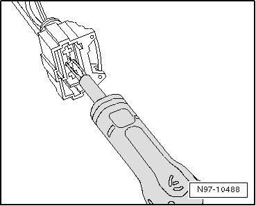
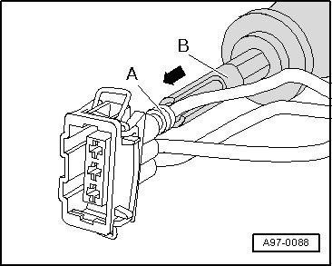
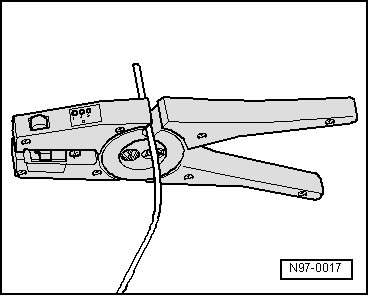
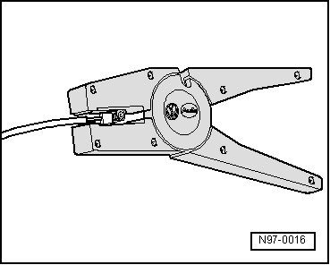
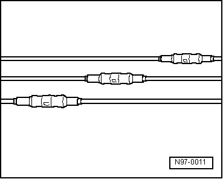

Contacts in Contact Housing
Contacts in Contact Housing
- First, open or release if necessary the secondary lock of the contact housing. Refer to --> [ Contact Housings Releasing ] Contact Housings Releasing.
- Release contact (primary lock) using the appropriate release tool. Refer to --> [ Contact Housings Releasing ] Contact Housings Releasing.

- Pull contact at single wire out of contact housing.
- Take yellow repair wire with correct contact out of Wiring Harness Repair Kit.
- Free up repair point of vehicle-specific wiring harness (approximately 20 cm to both sides of repair point).
- If required, remove wiring harness wrapping using a folding knife.
- Insert new contact of repair wire into contact housing until it engages.

- Slide a single wire seal on to the repair wire.
• When doing this, small diameter of single seal must point toward contact housing.
- Slide single wire seal into contact housing using the correct assembly tool. Refer to--> [ Single Wire Seals ] Single Wire Seals.
- Shorten repair wire and single wire of vehicle-specific wiring harness according to your needs using Wire Stripper (VAS 1978/3).

- Strip ends of repair wire and of vehicle-specific single wire using 6 - 7 mm wire stripper.

- Crimp the stripped ends of repair wire and single wire of vehicle-specific wiring harness using crimp pliers and a crimp connection.
• Make sure that crimp connections do not lie directly next to each other when several wires need to be repaired. Arrange crimp connections at a slight offset so that the circumference of the wiring harness does not become too large.

• In the event the repair point was previous taped, this point must be taped anew with yellow insulating tape after repairs.
• Secure the repaired wiring harness if necessary with a cable tie to prevent flapping noises while driving.